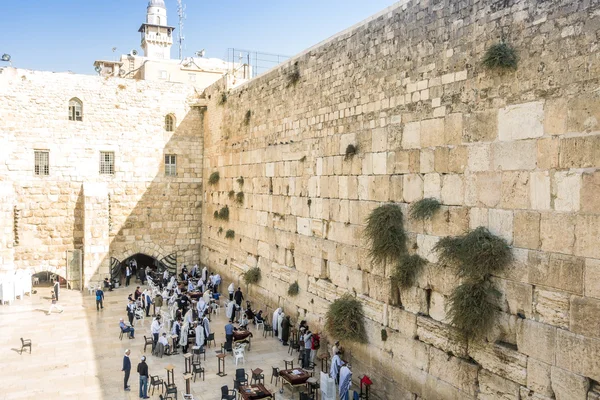
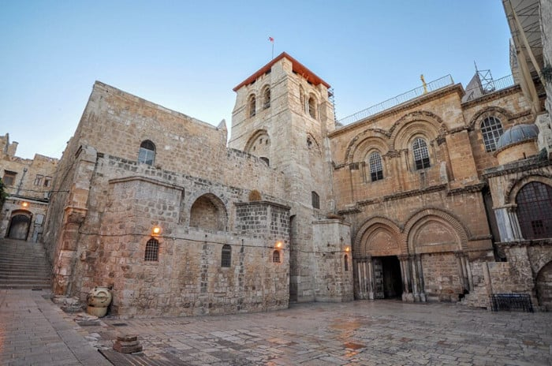
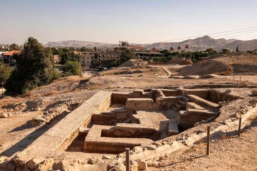
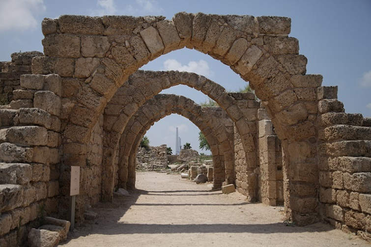
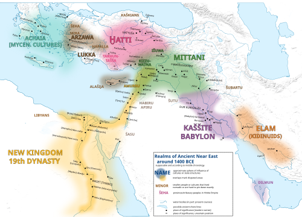
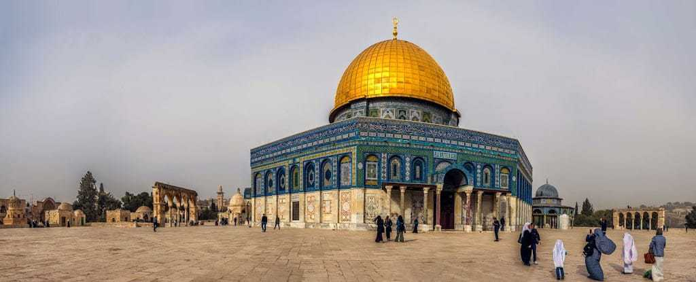

ফিলিস্তিন নামটি আজ রাজনীতি ও সংঘাতের সঙ্গে এতটা জড়িয়ে গেছে যে এর ধর্মীয় ও সাংস্কৃতিক ইতিহাস প্রায়ই আড়ালে পড়ে যায়। অথচ এই ভূখণ্ডটি পৃথিবীর সেই অল্প সংখ্যক স্থানের একটি, যাকে একইসঙ্গে ইহুদি, খ্রিষ্টান ও মুসলিম—তিন ধর্মই পবিত্র বলে মানে। ইহুদিদের কাছে এটি প্রতিশ্রুত কনান ভূমি ও জেরুজালেমের মন্দিরের শহর; খ্রিষ্টানদের কাছে যিশুর জন্ম, প্রচার, ক্রুশবিদ্ধ হওয়া ও পুনরুত্থানের ভূমি; আর মুসলিমদের কাছে মসজিদুল আকসা, ইসরা-মিরাজের গন্তব্য এবং প্রথম কিবলার ভূমি।
এই প্রবন্ধে আমরা তিনটি স্তরে বিষয়টি দেখব। প্রথমে কুরআন ও সহিহ হাদিসের বর্ণনা, তারপর বাইবেল ও তাওরাতের ঐতিহ্য, এবং সর্বশেষে প্রত্নতত্ত্ব, জাতিসংঘের দলিল ও আন্তর্জাতিক আইনের আলোকে রাজনৈতিক ইতিহাস। এই তিন স্তরকে আলাদা রেখে দেখলে ধর্মীয় বিশ্বাসের প্রতি সম্মানও বজায় থাকে, আর ইতিহাসের তথ্যও বিকৃত হয় না।
প্রথম অধ্যায়: ফিলিস্তিনের পরিচয় ও নামের ইতিহাস
“ফিলিস্তিন” বলতে কোন ভূখণ্ড বোঝায়, তা নিয়ে প্রথমেই স্পষ্টতা দরকার। কারণ ঐতিহাসিক ফিলিস্তিন, ব্রিটিশ ম্যান্ডেট ফিলিস্তিন এবং বর্তমানে দাবি করা ফিলিস্তিন রাষ্ট্র—এই তিনটি একই রাজনৈতিক সীমানা নয়।
ভৌগোলিকভাবে এটি পশ্চিম এশিয়ার ভূমধ্যসাগরের পূর্ব উপকূলবর্তী অঞ্চল; পশ্চিমে ভূমধ্যসাগর, পূর্বে জর্ডান নদী ও মৃত সাগর, উত্তরে লেবানন ও সিরিয়া এবং দক্ষিণে সিনাই ও নেগেভ মরুভূমি। ঐতিহাসিক ফিলিস্তিনের ভূখণ্ডের মধ্যে পড়ে বর্তমান ইসরায়েল রাষ্ট্রের ভূখণ্ড, পশ্চিম তীর, পূর্ব জেরুজালেম এবং গাজা উপত্যকা।
“Palestine” নামটি প্রাচীন গ্রিক Palaistinē এবং লাতিন Palaestina-এর সঙ্গে সম্পর্কিত, যা ফিলিস্তি (Philistines) জনগোষ্ঠীর নাম থেকে এসেছে বলে সাধারণত মনে করা হয়। প্রাচীন ফিলিস্তিরা দক্ষিণ উপকূলীয় অঞ্চলে বসবাস করত—গাজা, আশকেলন, আশদোদ, একরন ও গাথের মতো নগরকেন্দ্রে। বাইবেলে তাদের Philistines নামে উল্লেখ করা হয়েছে।
এখানে একটি গুরুত্বপূর্ণ সতর্কতা: প্রাচীন ফিলিস্তি জনগোষ্ঠী এবং আধুনিক ফিলিস্তিনি জনগণ একই জাতিগত পরিচয় নয়। আধুনিক ফিলিস্তিনি পরিচয় বহু শতাব্দীর আঞ্চলিক ইতিহাস, আরবি ভাষা, সংস্কৃতি ও জনবসতির ধারাবাহিকতায় গড়ে উঠেছে—নামের মিল থাকলেও দুই জনগোষ্ঠীর মধ্যে সরাসরি বংশগত ধারাবাহিকতা প্রমাণিত নয়।
কুরআনে কি “ফিলিস্তিন” নাম আছে?
কুরআনে আধুনিক রাষ্ট্র বা অঞ্চলের নাম হিসেবে সরাসরি “ফিলিস্তিন” শব্দটি ব্যবহৃত হয়নি। তবে এমন কয়েকটি ভূখণ্ডের কথা এসেছে, যেগুলোকে তাফসির ও ইসলামি ঐতিহ্যে এই অঞ্চলের সঙ্গে সম্পর্কিত করা হয়:
সূরা আল-ইসরা, ১৭:১ — এখানে মসজিদুল আকসা ও তার চারপাশকে বরকতময় বলা হয়েছে।
সূরা আল-মায়িদা, ৫:২১ — মুসা (আ.) বনি ইসরায়েলকে বলেছিলেন:
يَا قَوْمِ ادْخُلُوا الْأَرْضَ الْمُقَدَّسَةَ الَّتِي كَتَبَ اللَّهُ لَكُمْ
অর্থ: “হে আমার সম্প্রদায়! তোমরা সেই পবিত্র ভূমিতে প্রবেশ করো, যা আল্লাহ তোমাদের জন্য নির্ধারণ করেছেন।” এখানে আল-আর্দ আল-মুকাদ্দাসাহ বা পবিত্র ভূমির কথা বলা হয়েছে, যাকে বহু মুফাসসির বায়তুল মাকদিস ও তার আশপাশের অঞ্চল হিসেবে ব্যাখ্যা করেছেন। তবে আয়াতের শব্দ নিজে কোনো আধুনিক রাষ্ট্রের সীমানা নির্ধারণ করে না।
সূরা আল-আম্বিয়া, ২১:৭১ — আল্লাহ বলেন:
وَنَجَّيْنَاهُ وَلُوطًا إِلَى الْأَرْضِ الَّتِي بَارَكْنَا فِيهَا لِلْعَالَمِينَ
অর্থ: “আর আমি ইবরাহিম ও লূতকে উদ্ধার করে এমন ভূখণ্ডে পৌঁছে দিলাম, যাতে আমি বিশ্ববাসীর জন্য বরকত রেখেছি।” তাফসিরে এ বরকতময় ভূমিকে শাম অঞ্চলের সঙ্গে সম্পর্কিত করা হয়; ঐতিহাসিক ফিলিস্তিন সেই বৃহত্তর অঞ্চলের অন্তর্ভুক্ত।
সূরা আল-আম্বিয়া, ২১:৮১ — সোলায়মান (আ.)-এর জন্য বাতাসকে এমন ভূমির দিকে প্রবাহিত করার কথা বলা হয়েছে, যাতে বরকত রাখা হয়েছিল। সূরা আল-আ‘রাফ, ৭:১৩৭-এ বনি ইসরায়েলকে পূর্ব ও পশ্চিমের সেই ভূমির উত্তরাধিকারী করার কথা এসেছে।
সিদ্ধান্তটি স্পষ্ট: কুরআনে ফিলিস্তিনের আধুনিক নাম সরাসরি নেই, কিন্তু পবিত্র ভূমি, বরকতময় ভূমি ও মসজিদুল আকসার উল্লেখ আছে—এবং এসব আয়াতের তাফসিরেই ফিলিস্তিন ও বৃহত্তর শাম অঞ্চলের ধর্মীয় গুরুত্ব ব্যাখ্যা করা হয়।
দ্বিতীয় অধ্যায়: ইহুদি ধর্মে ফিলিস্তিনের গুরুত্ব
ইহুদি ধর্মে এই ভূমির গুরুত্ব বোঝার জন্য কয়েকটি কেন্দ্রীয় ধারণা জানা দরকার: ইবরাহিমের সঙ্গে চুক্তি, কনান ভূমি, বনি ইসরায়েল, দাউদ-সোলায়মানের রাজত্ব এবং জেরুজালেমের মন্দির।
ইবরাহিম ও কনান ভূমির প্রতিশ্রুতি। আদিপুস্তকে বলা হয়েছে, ঈশ্বর ইবরাহিমকে তাঁর জন্মভূমি ছেড়ে একটি নির্দিষ্ট ভূমির দিকে যেতে বলেন। Genesis 12:1–7-এ ইবরাহিমকে কনান দেশে যাওয়ার নির্দেশ ও তাঁর বংশধরদের সেই ভূমি দেওয়ার প্রতিশ্রুতি আছে; Genesis 13:14–17-এ তাঁকে চারদিকে তাকাতে বলা হয়; Genesis 15:18–21-এ নীলনদ থেকে ইউফ্রেটিস পর্যন্ত বিস্তৃত ভূখণ্ডের প্রতিশ্রুতি উল্লেখ আছে; এবং Genesis 17:7–8-এ চুক্তি ও কনান ভূমিকে স্থায়ী অধিকারের কথা বলা হয়েছে।
এখানে একটি জরুরি পার্থক্য: এই পদগুলোর প্রাচীন ভৌগোলিক সীমা, ধর্মীয় ব্যাখ্যা এবং আধুনিক রাজনৈতিক প্রয়োগ—তিনটি আলাদা বিষয়। ধর্মগ্রন্থে বর্ণিত সীমা সরাসরি আধুনিক রাষ্ট্রের সীমানা হিসেবে ব্যবহৃত হতে পারে না; এটি ধর্মতাত্ত্বিক ব্যাখ্যার বিষয়।
চুক্তির ধারাবাহিকতা। ইবরাহিমের পর তাঁর পুত্র ইসহাক (Genesis 26:2–5) এবং নাতি ইয়াকুবের (Genesis 28:13–15; 35:9–12) সঙ্গে ভূমির প্রতিশ্রুতি পুনরায় উল্লেখ করা হয়েছে। ইয়াকুবের অপর নাম “ইসরায়েল”; তাঁর বংশধরদের বলা হয় “বনি ইসরায়েল”।
মিসরে বনি ইসরায়েল ও মুসা (আ.)। বাইবেল অনুসারে ইয়াকুবের বংশধররা একসময় মিসরে বসতি স্থাপন করে, পরে দাসত্ব ও নিপীড়নের শিকার হয় এবং মুসার নেতৃত্বে মিসর থেকে বেরিয়ে আসে (Exodus 1; 3:7–10; 12; 14)। এরপর তারা কনান ভূমির দিকে যাত্রা করে। Deuteronomy 1:8 এবং Joshua 1:2–4-এ প্রতিশ্রুত ভূমিতে প্রবেশের নির্দেশ দেওয়া হয়েছে। কুরআনেও মুসা (আ.)-এর মাধ্যমে একই নির্দেশের কথা এসেছে (সূরা আল-মায়িদা ৫:২১–২৬), তবে কুরআনে বনি ইসরায়েলের অবাধ্যতা এবং চল্লিশ বছর বিচরণের কথা অতিরিক্তভাবে এসেছে (৫:২৪–২৬)—অর্থাৎ দুই ধর্মগ্রন্থের বিবরণে মিল থাকলেও সব বিবরণ এক নয়।
রাজা দাউদ ও জেরুজালেম। ইহুদি ধর্মে জেরুজালেমের গুরুত্ব বিশেষভাবে বাড়ে রাজা দাউদের সঙ্গে সম্পর্কের কারণে। 2 Samuel 5:6–10 অনুসারে দাউদ জেরুজালেম দখল করে রাজধানী করেন; 2 Samuel 6-এ চুক্তির সিন্দুক জেরুজালেমে আনা হয়। ইসলামেও দাউদ (আ.) একজন নবী ও আল্লাহর মনোনীত শাসক (সূরা আল-বাকারা ২:২৫১; আন-নিসা ৪:১৬৩; আল-ইসরা ১৭:৫৫; সাদ ৩৮:১৭–২৬)।
সোলায়মান ও প্রথম মন্দির। বাইবেলের বর্ণনায় দাউদের পুত্র সোলায়মান জেরুজালেমে প্রথম মন্দির নির্মাণ করেন (1 Kings 5; 6; 8; 2 Chronicles 3–7)। ইসলামেও সোলায়মান (আ.) একজন মহান নবী ও শাসক (সূরা আল-বাকারা ২:১০২; আন-নিসা ৪:১৬৩; আল-আম্বিয়া ২১:৭৮–৮২; সাবা ৩৪:১২–১৪; সাদ ৩৮:৩০–৪০)। তবে কুরআনে সোলায়মান (আ.)-এর মন্দির নির্মাণের এই নির্দিষ্ট বাইবেলীয় বিবরণ নেই—তাই দুই ধর্মের বিবরণ আলাদা করে চিহ্নিত করা জরুরি।
প্রথম মন্দিরের ধ্বংস। খ্রিস্টপূর্ব ৫৮৬/৫৮৭ সালে ব্যাবিলনীয় রাজা দ্বিতীয় নেবুখাদনেজার জেরুজালেম দখল করেন এবং মন্দির ধ্বংস করেন (2 Kings 25:8–12; Jeremiah 52:12–16)। এই ঘটনা ইহুদি ইতিহাসে “ব্যাবিলনীয় নির্বাসন” নামে পরিচিত। পরে পারসিক সম্রাট সাইরাস ব্যাবিলন জয় করে ইহুদিদের একটি অংশকে ফিরে যাওয়ার অনুমতি দেন (Ezra 1:1–4; 2 Chronicles 36:22–23)।

দ্বিতীয় মন্দির ও রোমান ধ্বংস। ইহুদিরা ফিরে এসে দ্বিতীয় মন্দির নির্মাণ করে (Ezra 3–6; Haggai 1–2); পরবর্তীতে হেরোদ দ্য গ্রেট মন্দির-প্রাঙ্গণের ব্যাপক সম্প্রসারণ করেন। খ্রিষ্টীয় ৭০ সালে রোমান সেনাপতি টাইটাসের বাহিনী জেরুজালেম দখল করে দ্বিতীয় মন্দির ধ্বংস করে। ইহুদি ইতিহাসবিদ জোসেফাসের The Jewish War (Book VI)-এ এই অবরোধ ও ধ্বংসের বিস্তারিত বিবরণ পাওয়া যায়।
তৃতীয় অধ্যায়: খ্রিষ্টধর্মে ফিলিস্তিনের গুরুত্ব
খ্রিষ্টধর্মের উৎপত্তি এই অঞ্চলের ঐতিহাসিক পরিবেশেই। যিশুর জন্ম, জীবন, ধর্মপ্রচার, ক্রুশবিদ্ধ হওয়া ও পুনরুত্থানের বিশ্বাস—সবকিছুর সঙ্গে ফিলিস্তিনের ভূগোল জড়িয়ে আছে।
জন্ম ও শৈশব। খ্রিষ্টানদের প্রচলিত বিশ্বাস অনুযায়ী যিশু বেথলেহেমে জন্মগ্রহণ করেন (Matthew 2:1; Luke 2:1–7)। Micah 5:2-এর পুরাতন নিয়মের ভবিষ্যদ্বাণীকে মথির সুসমাচারে যিশুর জন্মের সঙ্গে সম্পর্কিত করা হয়েছে (Matthew 2:5–6)। বেথলেহেমে অবস্থিত চার্চ অব দ্য নেটিভিটি খ্রিষ্টানদের কাছে গুরুত্বপূর্ণ পবিত্র স্থান; চতুর্থ শতাব্দীতে সম্রাট কনস্টান্টাইনের আমলে এখানে গির্জা নির্মিত হয়। এরপর যিশু নাজারেথে বেড়ে ওঠেন (Matthew 2:19–23; Luke 2:39–40; 4:16–30)।
গ্যালিলিতে প্রচার। যিশুর ধর্মপ্রচারের বড় অংশ গ্যালিলি অঞ্চলে সংঘটিত হয়েছিল বলে সুসমাচারে বর্ণিত হয়েছে (Matthew 4:12–17; Mark 1:14–20; Luke 4:14–21; John 2:1–11)।
জেরুজালেমে শেষ সময়। খ্রিষ্টানদের কাছে জেরুজালেমের গুরুত্বের প্রধান কারণ যিশুর জীবনের শেষ পর্যায়ের ঘটনাগুলো (Matthew 21; 26; 27; Mark 15; Luke 23; John 18–19)। মূলধারার খ্রিষ্টান বিশ্বাস অনুযায়ী যিশুকে জেরুজালেমে রোমান শাসনের অধীনে ক্রুশবিদ্ধ করা হয়, এবং পুনরুত্থানের ঘটনা সেই বিশ্বাসের কেন্দ্রবিন্দু (Matthew 28:1–10; Mark 16:1–8; Luke 24:1–12; John 20:1–18; 1 Corinthians 15:3–8)।

সংক্ষেপে, খ্রিষ্টধর্মে ফিলিস্তিনের গুরুত্ব প্রধানত যিশুর জীবন ও খ্রিষ্টধর্মের সূচনাকালের ইতিহাসের কারণে—এবং সেই ইতিহাস বোঝার জন্য এই অঞ্চলের ভূগোল অপরিহার্য।
চতুর্থ অধ্যায়: ইসলামে ফিলিস্তিনের গুরুত্ব
ইসলামে ফিলিস্তিনের গুরুত্বের কেন্দ্রবিন্দু হলো বায়তুল মাকদিস, মসজিদুল আকসা, ইসরা-মিরাজ, প্রথম কিবলা এবং বহু নবীর সঙ্গে এই অঞ্চলের সম্পর্ক।
মসজিদুল আকসার কুরআনিক মর্যাদা
سُبْحَانَ الَّذِي أَسْرَىٰ بِعَبْدِهِ لَيْلًا مِّنَ الْمَسْجِدِ الْحَرَامِ إِلَى الْمَسْجِدِ الْأَقْصَى الَّذِي بَارَكْنَا حَوْلَهُ لِنُرِيَهُ مِنْ آيَاتِنَا ۚ إِنَّهُ هُوَ السَّمِيعُ الْبَصِيرُ
অর্থ: “পবিত্র ও মহান তিনি, যিনি তাঁর বান্দাকে রাতে মসজিদুল হারাম থেকে মসজিদুল আকসায় ভ্রমণ করিয়েছিলেন, যার চারপাশকে আমি বরকতময় করেছি, যাতে আমি তাকে আমার নিদর্শনসমূহ দেখাতে পারি। নিশ্চয়ই তিনি সর্বশ্রোতা, সর্বদ্রষ্টা।” — সূরা আল-ইসরা, ১৭:১।
এই আয়াত থেকে তিনটি বিষয় স্পষ্ট: মসজিদুল আকসা কুরআনে সরাসরি উল্লেখিত; এর চারপাশকে আল্লাহ বরকতময় বলেছেন; এবং রাসুলুল্লাহ ﷺ-এর ইসরার গন্তব্য ছিল এটি। তবে আয়াতে মসজিদুল আকসার কথা বলা হয়েছে—আধুনিক রাষ্ট্রের সীমানা বা সমগ্র ফিলিস্তিনের রাজনৈতিক মালিকানা এখানে নির্ধারিত হয়নি।
ইসরা ও মিরাজ
ইসলামি বিশ্বাস অনুযায়ী রাসুলুল্লাহ ﷺ-কে মক্কা থেকে বায়তুল মাকদিসে নিয়ে যাওয়া হয়, এরপর মিরাজের ঘটনা ঘটে। সহিহ বুখারির দীর্ঘ মিরাজের বর্ণনায় আসমানসমূহে নবীদের সঙ্গে সাক্ষাতের কথা এসেছে (সহিহ বুখারি ৩২০৭; সহিহ মুসলিম ১৬২; সূরা আন-নাজম ৫৩:১৩–১৮)।
প্রথম কিবলা
রাসুলুল্লাহ ﷺ ও সাহাবিরা প্রথম দিকে বায়তুল মাকদিসের দিকে মুখ করে নামাজ আদায় করতেন; পরে কিবলা কাবার দিকে পরিবর্তিত হয়। বারা ইবন আযিব (রা.) থেকে বর্ণিত আছে যে রাসুলুল্লাহ ﷺ মদিনায় আগমনের পর ষোলো বা সতেরো মাস বায়তুল মাকদিসের দিকে মুখ করে নামাজ আদায় করেন (সহিহ বুখারি ৩৯৯; সহিহ মুসলিম ৫২৫; সূরা আল-বাকারা ২:১৪২–১৫০)।
তিন মসজিদের বিশেষ মর্যাদা
রাসুলুল্লাহ ﷺ বলেছেন: “তিনটি মসজিদ ছাড়া অন্য কোনো মসজিদের উদ্দেশ্যে সফরের প্রস্তুতি নেওয়া যাবে না: মসজিদুল হারাম, আমার এই মসজিদ এবং মসজিদুল আকসা।” (সহিহ বুখারি ১১৮৯; সহিহ মুসলিম ১৩৯৭)।
আবু যর (রা.) জিজ্ঞেস করেছিলেন, পৃথিবীতে প্রথম কোন মসজিদ নির্মিত হয়েছিল? রাসুলুল্লাহ ﷺ বললেন মসজিদুল হারাম, এরপর মসজিদুল আকসা; দুইয়ের মধ্যবর্তী সময় তিনি চল্লিশ বছর বলেছেন (সহিহ বুখারি ৩৩৬৬; সহিহ মুসলিম ৫২০)। এখানে সতর্কতা জরুরি: এই হাদিস দুই মসজিদের প্রাচীন মর্যাদা বোঝায়, বর্তমান দৃশ্যমান স্থাপনার নির্মাণ-তারিখ নয়।
পবিত্র ভূমি ও বনি ইসরায়েল
সূরা আল-মায়িদা ৫:২১-এ মুসা (আ.)-এর বক্তব্য এসেছে পবিত্র ভূমি সম্পর্কে। এখানে প্রশ্ন উঠতে পারে: পবিত্র ভূমি কি শুধু বনি ইসরায়েলের জন্য? আয়াতের প্রেক্ষাপটে মুসা (আ.) তাঁর সময়ের বনি ইসরায়েলকে সম্বোধন করছেন—এটি একটি ঐতিহাসিক ধর্মীয় ঘটনা। এই আয়াতকে সরাসরি আধুনিক রাষ্ট্রের সার্বভৌমত্ব বা অন্য জনগোষ্ঠীকে উচ্ছেদের অনুমতি হিসেবে ব্যাখ্যা করা সঠিক নয়। কুরআনে আরও বলা হয়েছে, বনি ইসরায়েল অবাধ্যতা করেছিল এবং তাদের চল্লিশ বছর ভূমিতে প্রবেশ থেকে বঞ্চিত রাখা হয়েছিল (৫:২২–২৬)।
নবীদের সঙ্গে এই অঞ্চলের সম্পর্ক
ইসলামি ঐতিহ্যে ফিলিস্তিন ও বৃহত্তর শাম অঞ্চল বহু নবীর জীবন ও দাওয়াতের সঙ্গে যুক্ত। তবে প্রত্যেক নবীর জন্মস্থান, মৃত্যুর স্থান কিংবা নির্দিষ্ট সমাধিস্থল সম্পর্কে আলাদা আলাদা ঐতিহাসিক প্রমাণ প্রয়োজন—শুধু কুরআনে নবীর নাম থাকার কারণে তাঁর জীবনের প্রতিটি ঘটনা ফিলিস্তিনে ঘটেছে বলা যাবে না।
মসজিদুল আকসা, ডোম অব দ্য রক ও পুরো প্রাঙ্গণ কি একই?
না। আল-হারাম আশ-শরিফ হলো জেরুজালেমের পুরোনো শহরে অবস্থিত বৃহৎ পবিত্র প্রাঙ্গণ। আল-আকসা মসজিদ হলো দক্ষিণ দিকে অবস্থিত প্রধান নামাজের স্থাপনা—তবে “মসজিদুল আকসা” শব্দটি মুসলিম ঐতিহ্যে পুরো প্রাঙ্গণকেও বোঝায়। আর ডোম অব দ্য রক একটি স্বতন্ত্র সোনালি-গম্বুজ স্থাপনা, যা সপ্তম শতাব্দীর শেষভাগে উমাইয়া আমলে নির্মিত। ধর্মীয় পবিত্রতার ধারণা এবং ভবন নির্মাণের ইতিহাস—দুটি আলাদা বিষয়।
পঞ্চম অধ্যায়: তিন ধর্মে ফিলিস্তিনের গুরুত্বের তুলনা
| বিষয় | ইহুদি ধর্ম | খ্রিষ্টধর্ম | ইসলাম |
|---|---|---|---|
| প্রধান ধর্মগ্রন্থ | তানাখ / তাওরাত | বাইবেল | কুরআন ও হাদিস |
| ইবরাহিমের সম্পর্ক | পূর্বপুরুষ | বিশ্বাসের গুরুত্বপূর্ণ পূর্বপুরুষ | মহান নবী |
| মুসার মর্যাদা | প্রধান নবী | গুরুত্বপূর্ণ নবী | মহান রাসুল |
| দাউদের মর্যাদা | ইসরায়েলের রাজা | গুরুত্বপূর্ণ বাইবেলীয় রাজা | নবী ও শাসক |
| সোলায়মানের মর্যাদা | রাজা ও মন্দির নির্মাতা | বাইবেলীয় রাজা | নবী ও শাসক |
| যিশুর মর্যাদা | মসিহ হিসেবে স্বীকৃত নন | ঈশ্বরের পুত্র ও ত্রাণকর্তা — মূলধারার বিশ্বাস | আল্লাহর রাসুল ও মসিহ |
| জেরুজালেম | প্রাচীন মন্দিরের শহর | যিশুর শেষ জীবনের ঘটনাস্থল | ইসরা-মিরাজ ও প্রথম কিবলার শহর |
| প্রধান পবিত্র স্থাপনা | ওয়েস্টার্ন ওয়াল ও টেম্পল মাউন্ট | হলি সেপালকার | মসজিদুল আকসা ও ডোম অব দ্য রক |
UNESCO জেরুজালেমের পুরোনো শহর ও এর দেয়ালকে ১৯৮১ সালে বিশ্ব ঐতিহ্য তালিকাভুক্ত করে—জর্ডানের প্রস্তাবের ভিত্তিতে, এবং “ইহুদি, খ্রিষ্টান ও ইসলামের পবিত্র শহর” হিসেবে; ১৯৮২ সাল থেকে এটি বিপন্ন বিশ্ব ঐতিহ্যের তালিকায়ও রয়েছে। অর্থাৎ আন্তর্জাতিক সাংস্কৃতিক সংস্থাটি নিজেই স্বীকার করে যে এই শহরের ঐতিহ্য কোনো একটি ধর্মের ইতিহাসে সীমাবদ্ধ নয়।
ষষ্ঠ অধ্যায়: রাজনৈতিক ইতিহাস — প্রাচীনকাল থেকে উসমানীয় যুগ
ধর্মীয় ইতিহাসের পাশাপাশি রাজনৈতিক ইতিহাস জানা জরুরি। কারণ বর্তমান সংঘাতের পেছনে শুধু ধর্মীয় বিরোধ নয়; সাম্রাজ্য, ভূখণ্ড, জাতীয়তাবাদ, ঔপনিবেশিক শাসন, অভিবাসন, যুদ্ধ ও বাস্তুচ্যুতির দীর্ঘ ইতিহাস রয়েছে।
কনানীয় সভ্যতা
ফিলিস্তিন ও তার আশপাশের অঞ্চল প্রাচীন কনানীয় সভ্যতার গুরুত্বপূর্ণ কেন্দ্র ছিল। খ্রিস্টপূর্ব তৃতীয় ও দ্বিতীয় সহস্রাব্দে এখানে নগররাষ্ট্র, কৃষিভিত্তিক সমাজ ও বাণিজ্যকেন্দ্র গড়ে ওঠে। প্রত্নতাত্ত্বিকভাবে জেরিকো, মেগিদ্দো ও হাসোরের মতো প্রাচীন নগরকেন্দ্রের নিদর্শন পাওয়া গেছে। গুরুত্বপূর্ণ কথা হলো—কনানীয় সভ্যতা ইসরায়েলি রাজ্যের আগের ইতিহাসের অংশ; অর্থাৎ এই অঞ্চলে ইসরায়েলি রাজ্য প্রতিষ্ঠার বহু আগেই মানুষ বসবাস করত এবং নগরসভ্যতা গড়ে উঠেছিল।


ফিলিস্তি জনগোষ্ঠী ও দুই রাজ্য
ফিলিস্তিরা দক্ষিণ উপকূলীয় অঞ্চলের পাঁচটি প্রধান নগরে বসবাস করত—গাজা, আশকেলন, আশদোদ, একরন ও গাথ (Joshua 13:2–3; Judges 3:3; 1 Samuel 6:17)। খ্রিস্টপূর্ব প্রথম সহস্রাব্দে এই অঞ্চলে ইসরায়েল ও যিহূদা নামে দুটি রাজ্যের অস্তিত্ব ছিল; বাইবেলের ঐতিহ্যে দাউদ ও সোলায়মানের অধীনে ঐক্যবদ্ধ রাজ্যের কথা বলা হয়েছে, যা পরে উত্তরে ইসরায়েল ও দক্ষিণে যিহূদা—দুই ভাগে বিভক্ত হয় (1 Kings 11:26–40; 12; 2 Kings 17; 25)।
প্রত্নতাত্ত্বিকভাবে দুই রাজ্যের অস্তিত্বের গুরুত্বপূর্ণ প্রমাণ রয়েছে। মেরনেপতাহ স্টিল-এ (খ্রিস্টপূর্ব ত্রয়োদশ শতাব্দীর শেষভাগ) “ইসরায়েল” নামে একটি জনগোষ্ঠীর উল্লেখ পাওয়া যায়; তেল দান স্টিল-এ (খ্রিস্টপূর্ব নবম শতাব্দী) “House of David” বা দাউদের বংশের উল্লেখ রয়েছে বলে বহু গবেষক মনে করেন।
আসিরীয়, ব্যাবিলনীয়, পারসিক, গ্রিক ও রোমান শাসন
খ্রিস্টপূর্ব ৭২২/৭২১ সালে আসিরীয় সাম্রাজ্য উত্তর ইসরায়েল রাজ্য দখল করে (2 Kings 17:5–23); এরপর ৫৮৬/৫৮৭ সালে ব্যাবিলনীয়রা জেরুজালেম দখল করে প্রথম মন্দির ধ্বংস করে এবং বহু ইহুদিকে নির্বাসনে পাঠায়। ৫৩৯ সালে পারসিক সম্রাট সাইরাস ব্যাবিলন দখল করেন এবং ইহুদিদের ফিরে গিয়ে মন্দির নির্মাণের অনুমতি দেন। ৩৩২ সালে আলেকজান্ডার দ্য গ্রেট এই অঞ্চল দখল করেন; তাঁর মৃত্যুর পর এটি প্রথমে টলেমীয় ও পরে সেলিউসিড রাজবংশের অধীনে যায়। ৬৩ খ্রিস্টপূর্বাব্দে রোমান সেনাপতি পম্পেই জেরুজালেমে প্রবেশ করেন এবং রোমান প্রভাব প্রতিষ্ঠিত হয়; পরবর্তীতে হেরোদ দ্য গ্রেট রোমের অধীন রাজা হিসেবে শাসন করেন।
খ্রিষ্টীয় ৬৬–৭০ সালে ইহুদি বিদ্রোহ সংঘটিত হয় এবং ৭০ সালে রোমান বাহিনী দ্বিতীয় মন্দির ধ্বংস করে। ১৩২–১৩৫ খ্রিষ্টাব্দে বার কখবা বিদ্রোহ দমন করার পর সম্রাট হাদ্রিয়ান জেরুজালেমের নাম পরিবর্তন করে Aelia Capitolina করেন বলে ঐতিহাসিক সূত্রে উল্লেখ আছে।

বাইজেন্টাইন যুগ ও মুসলিম বিজয়
রোমান সাম্রাজ্যের পূর্বাংশ খ্রিষ্টধর্ম গ্রহণ করার পর ফিলিস্তিন খ্রিষ্টানদের গুরুত্বপূর্ণ ধর্মীয় কেন্দ্রে পরিণত হয়—বেথলেহেমে চার্চ অব দ্য নেটিভিটি নির্মিত ও সম্প্রসারিত হয়, জেরুজালেমে চার্চ অব দ্য হলি সেপালকার প্রতিষ্ঠিত হয়, এবং সম্রাট কনস্টান্টাইনের আমলে চতুর্থ শতকে জেরুজালেমে খ্রিষ্টান স্থাপত্যের ব্যাপক বিকাশ ঘটে।
সপ্তম শতাব্দীতে মুসলিম বাহিনী বাইজেন্টাইন সাম্রাজ্যের বিরুদ্ধে যুদ্ধ করে শাম অঞ্চলের নিয়ন্ত্রণ নেয়। ৬৩৬ সালে ইয়ারমুকের যুদ্ধে বাইজেন্টাইন বাহিনী পরাজিত হয় এবং ৬৩৭–৬৩৮ সালের দিকে জেরুজালেম মুসলিমদের নিয়ন্ত্রণে আসে। খলিফা উমর ইবনুল খাত্তাব (রা.)-এর শাসনামলে জেরুজালেমের আত্মসমর্পণের ঘটনা ইসলামি ইতিহাসে গুরুত্বপূর্ণ। এই সময় জেরুজালেমে মুসলিম, খ্রিষ্টান ও ইহুদি সম্প্রদায়ের বসবাস অব্যাহত থাকে; তবে বিভিন্ন সময় শাসকদের নীতি, করব্যবস্থা ও ধর্মীয় স্বাধীনতার বাস্তবতা পরিবর্তিত হয়েছে—তাই পুরো মুসলিম শাসনকালকে একরকম বলা যাবে না।

ক্রুসেড থেকে উসমানীয় যুগ
১০৯৯ সালে প্রথম ক্রুসেডের বাহিনী জেরুজালেম দখল করে; এই দখলের সময় মুসলিম ও ইহুদি অধিবাসীদের ওপর ব্যাপক হত্যাকাণ্ড সংঘটিত হয়। ১১৮৭ সালে সালাহউদ্দিন আইয়ুবি হিত্তিনের যুদ্ধে ক্রুসেডারদের পরাজিত করে জেরুজালেম পুনরুদ্ধার করেন। আইয়ুবীয় শাসনের পর মামলুকরা ফিলিস্তিন ও মিসরের নিয়ন্ত্রণ নেয় এবং ১২৯১ সালে একর দখলের মাধ্যমে ক্রুসেডারদের মূল ভূখণ্ডভিত্তিক উপস্থিতির অবসান ঘটে; মামলুক আমলে জেরুজালেমে বহু মাদ্রাসা, মসজিদ ও ধর্মীয় প্রতিষ্ঠান নির্মিত হয়।
১৫১৬–১৫১৭ সালে উসমানীয় সাম্রাজ্য মামলুকদের পরাজিত করে ফিলিস্তিনের নিয়ন্ত্রণ নেয় এবং প্রায় চার শতাব্দী (১৯১৭ পর্যন্ত) এই অঞ্চল উসমানীয় শাসনের অধীনে থাকে। এ সময় মুসলিমরা সংখ্যাগরিষ্ঠ জনগোষ্ঠী ছিল, পাশাপাশি খ্রিষ্টান ও ইহুদি সম্প্রদায়ের বসবাস ছিল; জেরুজালেম ধর্মীয় তীর্থস্থান হিসেবে গুরুত্বপূর্ণ ছিল। উসমানীয় শাসনের শেষভাগে ইউরোপীয় শক্তির প্রভাব ও জাতীয়তাবাদী আন্দোলনের কারণে রাজনৈতিক পরিস্থিতি বদলাতে থাকে।
সপ্তম অধ্যায়: আধুনিক সংকটের উৎপত্তি
আজকের ইসরায়েল-ফিলিস্তিন সংঘাত বোঝার জন্য উনিশ ও বিশ শতকের ইতিহাস অপরিহার্য।
জায়নবাদ ও ব্রিটিশ ম্যান্ডেট
জায়নবাদ উনিশ শতকের শেষভাগে গড়ে ওঠা একটি ইহুদি জাতীয়তাবাদী আন্দোলন, যার মূল লক্ষ্য ছিল ইহুদিদের জন্য একটি জাতীয় আবাসভূমি বা রাষ্ট্র প্রতিষ্ঠা। ইউরোপে ইহুদিদের ওপর নিপীড়ন, বৈষম্য ও সহিংসতা এই আন্দোলনের বিকাশে গুরুত্বপূর্ণ ভূমিকা রাখে। থিওডর হার্জল আধুনিক রাজনৈতিক জায়নবাদের অন্যতম প্রধান নেতা (Der Judenstaat, ১৮৯৬; প্রথম জায়নিস্ট কংগ্রেস, বাজেল, ১৮৯৭)।
এখানে একটি পার্থক্য জরুরি: ইহুদি ধর্মীয় ঐতিহ্য বহু শতাব্দী ধরে জেরুজালেমের সঙ্গে সম্পর্কিত; কিন্তু আধুনিক রাজনৈতিক জায়নবাদ উনিশ শতকের শেষভাগের একটি জাতীয়তাবাদী রাজনৈতিক আন্দোলন। দুটি বিষয়কে এক করে দেখা ঠিক নয়।
প্রথম বিশ্বযুদ্ধের সময় ফিলিস্তিন উসমানীয় সাম্রাজ্যের অধীনে ছিল; ১৯১৭ সালে ব্রিটিশ বাহিনী জেরুজালেম দখল করে। একই বছর ব্রিটিশ পররাষ্ট্রমন্ত্রী আর্থার বালফুরের ঘোষণায় ফিলিস্তিনে ইহুদি জনগণের জন্য একটি জাতীয় আবাসভূমি প্রতিষ্ঠার প্রতি ব্রিটিশ সমর্থন জানানো হয়—তবে ঘোষণায় আরও বলা হয়েছিল, ফিলিস্তিনের বিদ্যমান অ-ইহুদি সম্প্রদায়ের নাগরিক ও ধর্মীয় অধিকার ক্ষুণ্ণ করা যাবে না। এই ঘোষণার ফলে আরব জনগোষ্ঠীর মধ্যে রাজনৈতিক উদ্বেগ ও বিরোধিতা বাড়ে।
প্রথম বিশ্বযুদ্ধের পর ফিলিস্তিন ব্রিটিশ ম্যান্ডেটের অধীনে আসে; ১৯২২ সালে লীগ অব নেশনস ব্রিটেনকে ফিলিস্তিন শাসনের ম্যান্ডেট প্রদান করে, যার মধ্যে বালফুর ঘোষণার নীতিও অন্তর্ভুক্ত ছিল। এই সময়ে ইউরোপ থেকে ইহুদি অভিবাসন বাড়ে—বিশেষ করে নাৎসি জার্মানির নিপীড়ন থেকে পালিয়ে বহু ইহুদি ফিলিস্তিনে আশ্রয় নেয়। একই সময়ে ফিলিস্তিনি আরব জনগণ স্বাধীনতা, রাজনৈতিক অধিকার ও অভিবাসন নীতির বিষয়ে নিজেদের দাবি জানাতে থাকে।
ব্রিটিশ শাসন, ইহুদি অভিবাসন এবং ভূমি ও রাজনৈতিক অধিকারের প্রশ্নে ১৯৩৬ সালে ফিলিস্তিনি আরব বিদ্রোহ শুরু হয়, যা ১৯৩৯ সাল পর্যন্ত বিভিন্ন পর্যায়ে চলে; ব্রিটিশ বাহিনী বিদ্রোহ দমন করে এবং এ সময় ফিলিস্তিনি সমাজের রাজনৈতিক ও সামাজিক কাঠামো ব্যাপকভাবে ক্ষতিগ্রস্ত হয়।
১৯৪৭-এর বিভাজন ও ১৯৪৮-এর নাকবা
১৯৪৭ সালের ২৯ নভেম্বর জাতিসংঘ সাধারণ পরিষদ রেজল্যুশন ১৮১ (II) গ্রহণ করে, যেখানে ফিলিস্তিনকে একটি ইহুদি রাষ্ট্র, একটি আরব রাষ্ট্র এবং আন্তর্জাতিক ব্যবস্থার অধীনে জেরুজালেম—এই তিন ভাগে ভাগ করার সুপারিশ করা হয়। ইহুদি নেতৃত্ব পরিকল্পনাটি গ্রহণ করে; ফিলিস্তিনি আরব নেতৃত্ব ও আরব রাষ্ট্রগুলো তা প্রত্যাখ্যান করে। বিরোধের পেছনে ছিল ভূমি বণ্টন, জনসংখ্যা, রাজনৈতিক প্রতিনিধিত্ব ও আত্মনিয়ন্ত্রণের প্রশ্ন।
১৯৪৮ সালের ১৪ মে ব্রিটিশ ম্যান্ডেট শেষ হওয়ার প্রাক্কালে ইসরায়েল স্বাধীনতা ঘোষণা করে; এর পরপরই আরব-ইসরায়েল যুদ্ধ শুরু হয়। যুদ্ধের সময় প্রায় সাত লাখ ফিলিস্তিনি বাস্তুচ্যুত হন বা নিজেদের বাড়িঘর ছেড়ে যেতে বাধ্য হন—এই ঘটনা ফিলিস্তিনিরা “নাকবা” (النكبة) বা মহাবিপর্যয় নামে ডাকে। এর ফলে বহু ফিলিস্তিনি শরণার্থী জর্ডান, লেবানন, সিরিয়া, গাজা ও পশ্চিম তীর এবং অন্যান্য অঞ্চলে আশ্রয় নেন। জাতিসংঘের ঐতিহাসিক বিবরণে ১৯৪৮ সালের যুদ্ধের সময় ফিলিস্তিনি আরব জনগোষ্ঠীর অর্ধেকের বেশি বাস্তুচ্যুত হওয়ার কথা উল্লেখ আছে।
১৯৬৭ থেকে অসলো পর্যন্ত
১৯৬৭ সালের জুনে ইসরায়েল মিসর, জর্ডান ও সিরিয়ার বিরুদ্ধে যুদ্ধে অংশ নেয় এবং পশ্চিম তীর, পূর্ব জেরুজালেম, গাজা উপত্যকা, গোলান মালভূমি ও সিনাই উপদ্বীপ দখল করে। পরবর্তীতে সিনাই মিসরকে ফিরিয়ে দেওয়া হয়; কিন্তু পশ্চিম তীর, পূর্ব জেরুজালেম ও গাজার রাজনৈতিক ও আইনি অবস্থান আজও সংঘাতের কেন্দ্রবিন্দু। নিরাপত্তা পরিষদের রেজল্যুশন ২৪২ (১৯৬৭) যুদ্ধের মাধ্যমে ভূখণ্ড দখলের অগ্রহণযোগ্যতা এবং দখলকৃত ভূখণ্ড থেকে বাহিনী প্রত্যাহারসহ শান্তিপূর্ণ সমাধানের কাঠামো তুলে ধরে।
১৯৬৪ সালে PLO প্রতিষ্ঠিত হয়, যার লক্ষ্য ছিল ফিলিস্তিনি জনগণের জাতীয় অধিকার ও স্বাধীনতার দাবি আন্তর্জাতিক পর্যায়ে তুলে ধরা; পরবর্তীতে ইয়াসির আরাফাত এর অন্যতম প্রধান নেতা হিসেবে পরিচিত হন। প্রথম ইন্তিফাদা (১৯৮৭–১৯৯৩) ছিল পশ্চিম তীর ও গাজায় দখলদারত্বের বিরুদ্ধে ব্যাপক গণঅভ্যুত্থান; দ্বিতীয় ইন্তিফাদা (২০০০–২০০৫) শুরু হয় জেরুজালেমের পবিত্র স্থান, রাজনৈতিক অচলাবস্থা ও দখলদারত্বকে কেন্দ্র করে। ১৯৯৩ সালে PLO ও ইসরায়েলের মধ্যে অসলো চুক্তি স্বাক্ষরিত হয়, যেখানে পারস্পরিক স্বীকৃতি ও অন্তর্বর্তীকালীন ফিলিস্তিনি স্বশাসনব্যবস্থার পথ তৈরি হয়—তবে জেরুজালেম, শরণার্থী, বসতি, সীমান্ত ও নিরাপত্তার চূড়ান্ত সমাধান হয়নি।
গাজা, অবরোধ ও সাম্প্রতিক সংঘাত
২০০৫ সালে ইসরায়েল গাজা থেকে স্থায়ী সেনা ও বসতি সরিয়ে নেয়। ২০০৬ সালের ফিলিস্তিনি নির্বাচনে হামাস জয়লাভ করে এবং ২০০৭ সালে গাজায় হামাসের নিয়ন্ত্রণ প্রতিষ্ঠিত হয়; এরপর ইসরায়েল ও মিসর গাজার ওপর কঠোর সীমান্ত নিয়ন্ত্রণ আরোপ করে এবং গাজায় একাধিক বড় সামরিক সংঘাত ঘটে।
২০২৩ সালের ৭ অক্টোবর হামাস ও অন্যান্য সশস্ত্র গোষ্ঠী ইসরায়েলে হামলা চালায়; এতে বেসামরিক মানুষ নিহত ও জিম্মি হন। এরপর ইসরায়েল গাজায় ব্যাপক সামরিক অভিযান শুরু করে, যার ফলে ভয়াবহ মানবিক বিপর্যয়, ব্যাপক প্রাণহানি ও বাস্তুচ্যুতি ঘটে। এই সংঘাতে প্রতিটি পক্ষের কর্মকাণ্ডকে আন্তর্জাতিক মানবিক আইন অনুযায়ী বিচার করতে হয়: বেসামরিক মানুষকে লক্ষ্য করে হামলা, জিম্মি করা, নির্বিচার আক্রমণ এবং বেসামরিক জনগণকে সমষ্টিগত শাস্তি দেওয়া—কোনোটিই গ্রহণযোগ্য নয়।
আন্তর্জাতিক আইনে ফিলিস্তিনের অধিকার
জাতিসংঘ সাধারণ পরিষদ, নিরাপত্তা পরিষদ এবং আন্তর্জাতিক বিচার আদালতের বিভিন্ন নথিতে ফিলিস্তিনি জনগণের আত্মনিয়ন্ত্রণের অধিকার, দখলকৃত ভূখণ্ডের আইনি অবস্থান, বসতি স্থাপন ও শরণার্থী সমস্যা আলোচিত হয়েছে। বিশেষভাবে গুরুত্বপূর্ণ:
| দলিল | বছর | বিষয় |
|---|---|---|
| UNGA Resolution 181 (II) | ১৯৪৭ | বিভাজন পরিকল্পনা |
| UNGA Resolution 194 (III) | ১৯৪৮ | শরণার্থী প্রশ্ন |
| UNSC Resolution 242 | ১৯৬৭ | যুদ্ধের পর শান্তি ও ভূখণ্ডের প্রশ্ন |
| UNSC Resolution 338 | ১৯৭৩ | যুদ্ধবিরতি ও আলোচনার আহ্বান |
| ICJ Advisory Opinion | ১৯ জুলাই ২০২৪ | অধিকৃত ফিলিস্তিনি ভূখণ্ডে ইসরায়েলের নীতি ও উপস্থিতির আইনি পরিণতি |
আইসিজে ২০২৪ সালের ১৯ জুলাই তার পরামর্শমূলক মতামতে বলে যে ইসরায়েলের চলমান দখলদারিত্ব আন্তর্জাতিক আইনে অবৈধ, নতুন বসতি স্থাপন বন্ধ করতে হবে এবং দখলের ক্ষতিপূরণ দিতে হবে। এটি পরামর্শমূলক মতামত—বাধ্যতামূলক রায় নয়। পাশাপাশি ২০২৪ সালের ২১ নভেম্বর আন্তর্জাতিক অপরাধ আদালত (ICC) যুদ্ধাপরাধ ও মানবতাবিরোধী অপরাধের অভিযোগে গ্রেপ্তারি পরোয়ানা জারি করে।
অষ্টম অধ্যায়: ফিলিস্তিন কি শুধু মুসলমান, ইহুদি নাকি খ্রিষ্টানদের?
এই প্রশ্নের উত্তর দিতে তিনটি পৃথক বিষয় আলাদা করতে হবে।
এক — ধর্মীয় ঐতিহাসিক সম্পর্ক। ইহুদিদের সঙ্গে এই অঞ্চলের সম্পর্ক প্রাচীন ইসরায়েলি ও যিহূদা রাজ্য, জেরুজালেমের মন্দির এবং ধর্মীয় ঐতিহ্যের সঙ্গে যুক্ত; খ্রিষ্টানদের সঙ্গে সম্পর্ক যিশুর জন্ম, ধর্মপ্রচার, ক্রুশবিদ্ধ হওয়া ও পুনরুত্থানের বিশ্বাসের সঙ্গে; আর মুসলমানদের সঙ্গে সম্পর্ক মসজিদুল আকসা, ইসরা-মিরাজ, প্রথম কিবলা ও বহু নবীর ইতিহাসের সঙ্গে।
দুই — ঐতিহাসিক বসবাস ও জনগণের অধিকার। কোনো ধর্মের সঙ্গে একটি ভূখণ্ডের ঐতিহাসিক সম্পর্ক থাকা মানেই অন্য জনগোষ্ঠীর অধিকার বিলুপ্ত হয়ে যায় না। ফিলিস্তিনে মুসলিম, খ্রিষ্টান ও ইহুদি—বিভিন্ন সম্প্রদায়ের ঐতিহাসিক বসবাস রয়েছে। আর ফিলিস্তিনি পরিচয় কেবল ধর্মীয় পরিচয় নয়; এটি একটি জাতীয়, সাংস্কৃতিক ও ঐতিহাসিক পরিচয়।
তিন — ধর্মীয় প্রতিশ্রুতি কি আধুনিক রাষ্ট্রের সীমানা নির্ধারণ করে? এখানে একটি গুরুত্বপূর্ণ দার্শনিক ও আইনি পার্থক্য আছে। বাইবেলে কনান ভূমির প্রতিশ্রুতির বিবরণ আছে; কুরআনে বনি ইসরায়েলকে পবিত্র ভূমিতে প্রবেশের নির্দেশের উল্লেখ আছে। কিন্তু এসব ধর্মীয় বক্তব্যকে সরাসরি আধুনিক আন্তর্জাতিক আইনে কোনো রাষ্ট্রের একচ্ছত্র সার্বভৌমত্বের দলিল হিসেবে ব্যবহার করা যায় না। আধুনিক রাষ্ট্রের সীমান্ত, নাগরিকত্ব, দখলদারত্ব ও আত্মনিয়ন্ত্রণের অধিকার বিচার করতে হয় আন্তর্জাতিক আইন, জনগণের অধিকার ও ঐতিহাসিক বাস্তবতার ভিত্তিতে।
নবম অধ্যায়: রেফারেন্স তালিকা
নিচে বিষয়ভিত্তিক রেফারেন্সগুলো এক জায়গায় সাজানো হলো, যাতে পাঠক প্রতিটি বিষয় আলাদাভাবে যাচাই করতে পারেন।
ক. কুরআনের রেফারেন্স
| বিষয় | সূরা ও আয়াত |
|---|---|
| মসজিদুল আকসা ও ইসরা | আল-ইসরা ১৭:১ |
| পবিত্র ভূমি | আল-মায়িদা ৫:২১–২৬ |
| ইবরাহিম ও লূতের বরকতময় ভূমিতে হিজরত | আল-আম্বিয়া ২১:৭১ |
| সোলায়মানের জন্য বাতাস প্রবাহিত হওয়া | আল-আম্বিয়া ২১:৮১ |
| বনি ইসরায়েলকে ভূমির উত্তরাধিকারী করা | আল-আ‘রাফ ৭:১৩৭ |
| দাউদের নবুয়ত ও শাসন | আল-বাকারা ২:২৫১; সাদ ৩৮:১৭–২৬ |
| সোলায়মানের নবুয়ত ও শাসন | সাবা ৩৪:১২–১৪ |
| ঈসা (আ.)-এর পরিচয় ও জীবন | আলে ইমরান ৩:৪৫–৫৫; মারইয়াম ১৯:১৬–৩৬ |
খ. সহিহ হাদিসের রেফারেন্স
| বিষয় | গ্রন্থ ও হাদিস নম্বর |
|---|---|
| দুই মসজিদের প্রাচীন মর্যাদা | সহিহ বুখারি ৩৩৬৬; সহিহ মুসলিম ৫২০ |
| ইসরা ও মিরাজ | সহিহ বুখারি ৩২০৭; সহিহ মুসলিম ১৬২ |
| প্রথম কিবলা হিসেবে বায়তুল মাকদিস | সহিহ বুখারি ৩৯৯; সহিহ মুসলিম ৫২৫ |
| তিন মসজিদের বিশেষ মর্যাদা | সহিহ বুখারি ১১৮৯; সহিহ মুসলিম ১৩৯৭ |
হাদিস নম্বর প্রকাশক বা সংস্করণভেদে সামান্য পরিবর্তিত হতে পারে; তাই গ্রন্থের নাম ও হাদিসের বিষয়বস্তু মিলিয়ে যাচাই করা উচিত।
গ. বাইবেলের রেফারেন্স
| বিষয় | বাইবেলের রেফারেন্স |
|---|---|
| ইবরাহিমের কনান ভূমিতে যাত্রা ও প্রতিশ্রুতি | Genesis 12:1–7; 13:14–17; 15:18–21; 17:7–8 |
| ইসহাক ও ইয়াকুবের সঙ্গে প্রতিশ্রুতি | Genesis 26:2–5; 28:13–15; 35:9–12 |
| মিসরে নিপীড়ন ও মুসার প্রতি নির্দেশ | Exodus 1; 3:7–10; 12; 14 |
| প্রতিশ্রুত ভূমিতে প্রবেশের নির্দেশ | Deuteronomy 1:8; Joshua 1:2–4 |
| জেরুজালেম দখল ও দাউদের রাজধানী | 2 Samuel 5:6–10; 6; 1 Chronicles 11:4–9 |
| সোলায়মানের মন্দির | 1 Kings 5–8; 2 Chronicles 3–7 |
| ব্যাবিলনীয় আক্রমণ ও মন্দির ধ্বংস | 2 Kings 25; Jeremiah 39; 52 |
| ইহুদিদের প্রত্যাবর্তন | Ezra 1:1–4; 3–6; 2 Chronicles 36:22–23 |
| যিশুর জন্ম, প্রচার, ক্রুশবিদ্ধ হওয়া ও পুনরুত্থান | Matthew 1–2; 21–28; Mark 1; 15–16; Luke 2; 23–24; John 2; 18–20 |
ঘ. প্রাথমিক ও নির্ভরযোগ্য ঐতিহাসিক সূত্র
| সূত্র | কী যাচাই করতে সাহায্য করবে |
|---|---|
| Josephus, The Jewish War | রোমান-ইহুদি যুদ্ধ ও ৭০ খ্রিষ্টাব্দে মন্দির ধ্বংস |
| Josephus, Antiquities of the Jews | প্রাচীন ইহুদি ইতিহাস |
| Tacitus, Annals 15.44 | রোমান লেখকের কাছে খ্রিষ্টানদের প্রাথমিক উল্লেখ |
| Merneptah Stele | প্রাচীন “ইসরায়েল” জনগোষ্ঠীর উল্লেখ |
| Tel Dan Stele | দাউদের বংশ সম্পর্কিত প্রত্নতাত্ত্বিক সূত্র |
| League of Nations, Mandate for Palestine (1922) | ব্রিটিশ ম্যান্ডেটের আইনি কাঠামো |
| Balfour Declaration (1917) | ইহুদি জাতীয় আবাসভূমি বিষয়ে ব্রিটিশ ঘোষণা |
| UNGA Resolution 181 (1947); 194 (1948) | বিভাজন পরিকল্পনা ও শরণার্থী প্রশ্ন |
| UNSC Resolution 242 (1967); 338 (1973) | ১৯৬৭-পরবর্তী ভূখণ্ড, শান্তি ও যুদ্ধবিরতি |
| UNESCO, Old City of Jerusalem and its Walls | জেরুজালেমের ধর্মীয় ও সাংস্কৃতিক ঐতিহ্য (১৯৮১ তালিকাভুক্তি) |
| ICJ Advisory Opinion (২০২৪) | অধিকৃত ফিলিস্তিনি ভূখণ্ডের আন্তর্জাতিক আইনি অবস্থান |
দশম অধ্যায়: চূড়ান্ত মূল্যায়ন
ফিলিস্তিনের গুরুত্ব তিনটি ধর্মের কাছে তিনভাবে প্রকাশিত হলেও তাদের ইতিহাস পরস্পরের সঙ্গে গভীরভাবে জড়িত। ইহুদি ধর্মে এই গুরুত্ব ইবরাহিমের সঙ্গে চুক্তি, কনান ভূমি, প্রাচীন ইসরায়েলি রাজ্য এবং জেরুজালেমের মন্দিরকে কেন্দ্র করে গড়ে উঠেছে। খ্রিষ্টধর্মে এটি যিশুর জন্ম, জীবন, ধর্মপ্রচার, ক্রুশবিদ্ধ হওয়া ও পুনরুত্থানের বিশ্বাসকে কেন্দ্র করে। আর ইসলামে এটি কুরআনে বর্ণিত মসজিদুল আকসা, ইসরা-মিরাজ, প্রথম কিবলা এবং বহু নবীর সঙ্গে এই অঞ্চলের সম্পর্কের কারণে প্রতিষ্ঠিত।
কিন্তু ধর্মীয় ইতিহাসের পাশাপাশি একটি বাস্তব সত্যও রয়েছে: ফিলিস্তিনে বহু শতাব্দী ধরে বিভিন্ন জনগোষ্ঠী বসবাস করেছে এবং তাদের প্রত্যেকেরই মানবিক মর্যাদা, ধর্মীয় স্বাধীনতা ও নিরাপত্তার অধিকার রয়েছে। ফিলিস্তিনের ইতিহাসকে তাই শুধু ধর্মীয় দাবি দিয়ে বিচার করা যাবে না; আবার ধর্মীয় ঐতিহ্যকে উপেক্ষা করেও এর পূর্ণাঙ্গ ইতিহাস বোঝা সম্ভব নয়।
একটি ন্যায়সংগত সমাধানের জন্য যা প্রয়োজন বলে গবেষক ও আন্তর্জাতিক সংস্থাগুলো উল্লেখ করে থাকেন—ফিলিস্তিনি জনগণের আত্মনিয়ন্ত্রণের অধিকার; ইসরায়েলি ও ফিলিস্তিনি বেসামরিক মানুষের নিরাপত্তা; দখলদারত্ব ও অবৈধ বসতি স্থাপনের অবসান; মুসলিম, ইহুদি ও খ্রিষ্টানদের পবিত্র স্থানগুলোর সুরক্ষা; শরণার্থীদের ন্যায্য সমাধান; এবং আন্তর্জাতিক আইন ও মানবাধিকারের প্রতি সম্মান।
সর্বশেষ কথা: ফিলিস্তিনের ইতিহাস অধ্যয়ন করার সময় কুরআন, বাইবেল, প্রত্নতত্ত্ব, প্রাচীন ইতিহাস ও আন্তর্জাতিক আইন—সবগুলোকে পাশাপাশি রাখতে হবে। এতে ধর্মীয় বিশ্বাসের প্রতি সম্মান বজায় থাকবে, আবার ইতিহাসের তথ্যও বিকৃত হবে না।
আরও নির্ভরযোগ্য অনলাইন উৎস
- UNESCO — Old City of Jerusalem and its Walls — তিন ধর্মের ঐতিহাসিক স্থাপনা ও ঐতিহ্য।
- UNESCO — Jerusalem’s three religious traditions — জেরুজালেমের ইহুদি, খ্রিষ্টান ও মুসলিম ঐতিহ্য।
- United Nations — History of the Question of Palestine — ব্রিটিশ ম্যান্ডেট, ১৯৪৮, ১৯৬৭ ও পরবর্তী ইতিহাস।
- United Nations — Timeline of Events — জায়নবাদ, বালফুর ঘোষণা, নাকবা ও যুদ্ধের সময়রেখা।
- United Nations — Part II: 1947–1977 — বিভাজন পরিকল্পনা ও যুদ্ধ-পরবর্তী ইতিহাস।
- International Court of Justice — ১৯ জুলাই ২০২৪-এর পরামর্শমূলক মতামত।